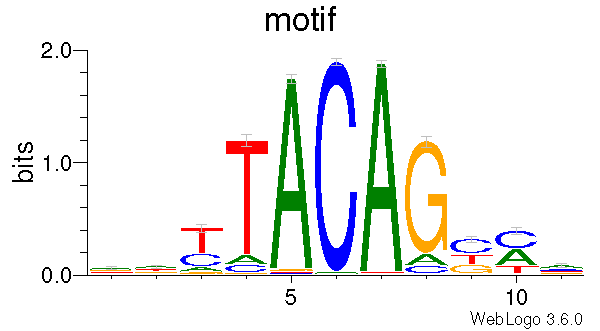

8. CpG_logo
8.1. Overview
CpG_logo extracts strand-aware genomic sequence around CpG sites, builds
motif matrices, and optionally generates sequence logos.
For each valid CpG record, the command:
extracts a sequence window from the reference genome;
writes the sequences to FASTA;
writes PFM, PPM, PWM, JASPAR, and MEME motif files; and
generates PDF and PNG sequence logos when WebLogo and Ghostscript are available.
8.2. Input Files
8.2.1. CpG BED file
The input BED file must contain at least six columns:
chrom, chromStart, chromEnd, name, score, strand
Example:
chr1 10000 10001 cg00000001 0 +
chr1 20000 20001 cg00000002 0 -
The third BED column, chromEnd, is treated as the genomic position of the
methylated cytosine, preserving the historical CpGtools behavior.
The strand must be + or -. For minus-strand records, the extracted
sequence is reverse-complemented.
Compressed .gz and .bz2 input files are supported.
8.2.2. Reference genome
The reference genome must be supplied in FASTA format.
If the corresponding .fai index is missing, CpG_logo creates it
automatically using pysam.faidx().
8.3. Sequence Window
With --extend N, the extracted sequence extends N bases upstream and
N bases downstream of the CpG position.
The sequence length is therefore:
The default is N = 5, producing an 11-bp sequence.
Records are skipped when:
the BED line has fewer than six columns;
the coordinate or strand is invalid;
the chromosome is absent from the reference genome;
the requested interval falls outside chromosome boundaries; or
the extracted sequence contains ambiguous bases such as
N.
8.4. Requirements
CpG_logo requires the Python package pysam for FASTA access.
Sequence logos additionally require:
Ghostscript (the
gsexecutable)
If WebLogo or Ghostscript is unavailable, logo generation is skipped with a warning, but the FASTA and motif-matrix files are still generated.
8.5. Usage
Basic usage:
CpG_logo \
-i 450_CH.hg19.bed.gz \
-r hg19.fa \
-o 450_CH
Useful options include:
-e,--extend– bases to extend upstream and downstream (default: 5)-n,--name– motif name used in motif outputs and the sequence logo (default:motif)-o,--output– output prefix-r,--refgenome– reference FASTA file
Display all options with:
CpG_logo -h
8.6. Output
For output prefix 450_CH, the command writes:
450_CH.fa– extracted sequences450_CH.pfm– position frequency matrix450_CH.ppm– position probability matrix450_CH.pwm– position weight matrix450_CH.jaspar– JASPAR-format motif450_CH.meme– MEME-format motif
When WebLogo and Ghostscript are available, it also writes:
450_CH.logo.pdf450_CH.logo.png
8.7. Example Data
8.8. Example Figure
{kind=link}
